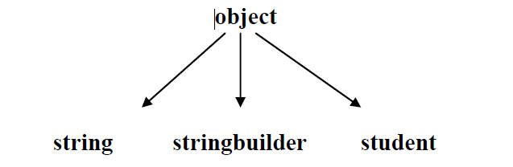
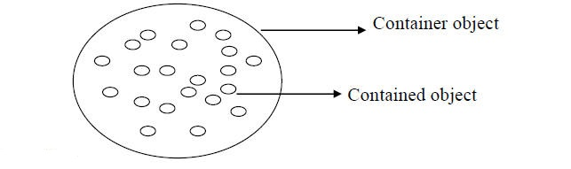
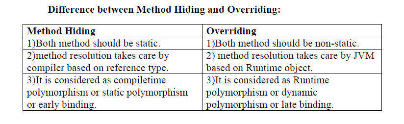
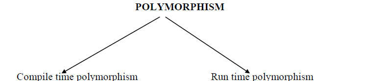
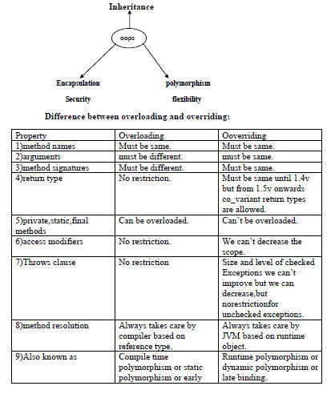
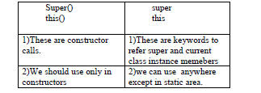
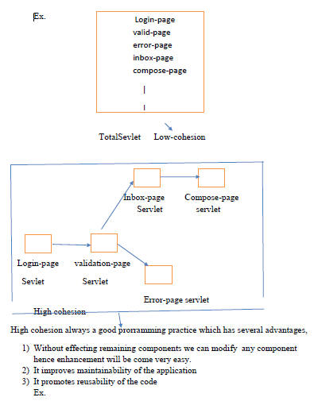

OOPS CONCEPT
Data Hiding
Abstraction
Encapsulation
Tightly Encapsulated Class
IS-A Relationship
HAS-A Relationship
Method Signature
Overloading
Method Hiding
Constructors
Type Casting
Coupling
DATA HIDING
Hiding of the data, so that outside person can't access our data directly.
By using private modifier we can implement Data Hiding.
Example:1
class account
{
private double balance =1000;
}
The main advantage of data Hiding is we can achieve security .
ABSTRACTION
Definition:
Hiding internal implementation details and just highlight the set of services what we are offering, is called
"Abstraction".
Example:
By bank ATM machine, bank people will highlight the set of services what they are offering without highlighting internal implementation. This concept is nothing but Abstraction.
By using interfaces and abstract classes we can achieve abstraction.
Advantages :
1)We can achieve security as no one can change our internal implementation.
2)Without effecting outside person we can change internal implementation hence enhancement will become very easy.
Disadvantages:
It increases length of code and slow down execution.
ENCAPSULATION
Defination:
Encapsulating data and corresponding methods(behaviour) into a single module is called
"Encapsulation".
If any java class follows data hiding and abstraction such type of class is called encapsulated class.
Encapsulation =Data Hiding+Abstraction
Example:1
class account
{
private double balance;
public double getbalance()
{
return balance;
}
public void setbalance(double balance)
{
this.balance =balance;
}
}
Hiding data behind method is the control concept of encapsulation.
Advantage:
1)Enhancement will become very easy.
2)Improve modularity to the application
Qu)Which of the following class is encapsulated class ?
1) class
{
int x =10;
}
Ans:Not Encapsulated
2) class B extends A
{
private int y =20;
}
Ans : Encapsulated class
3) class C extends A
{
private int z =20;
}
Ans : Encapsulated class
Conclusion:
If parent class is not tightly encapsulated then no child class is tightly encapsulated.
TIGHTLY ENCAPSULATED CLASS
Definition:
A class is said to be tightly encapsulated if every data member declared as the private.
Whether the class contain getter and setter methods are not and weather those methods declared as public or not, these are not required to check.
Example:
class A
{
private int balance;
public int getbalance()
{
Return balance();
}
}
Qu.Which of the following classes are tightly Encapsulated?
1) class a
{
private int x =10;
}
Ans:Tightly Encapsulated class
2) class A extends b
{
int y =20;
}
Ans: Not Tightly Encapsulated class
3) class C extends a
{
private int z =20;
}
Ans: Tightly Encapsulated class
IS-A RELATIONSHIP
1) It also known as
"Inheritance".
2) By using extends keyword we can implement IS-A Relationship.
3) The main advantage if IS-A Relationship is reuse ability of the code.
Example:
class p
{
public void m1()
{
------------
------------
}
}
class c extends p
{
public void m2()
{
------------
------------
}
}
class test
{
public static void main(String args[])
{
Case1:
P obj =new p();
p.m1(); //Valid
p.m2(); //C.E.:Can 't find symbol
symbol:method m2()
location:class p
case2:
c obj2 =new c();
obj2.m1(); //Valid
obj2.m2(); //Valid
case3:
c ob3 =new p(); C.E. incompitable types
required:p
found:c
Conclusion:
1) Whatever the parent class has by default available to the child class hence child class reference can call both parent class and child class.
2) Whatever the child has by default not available to the parent hence on the parent class reference we can call only parent class methods and we can't all child specific methods.
3)Parent class reference can be used to hold child class objects by using they reference we can callonly parent class methods but we
can't call child specific methods.
4)We can't use call child specific methods.
5)We can't use child class reference to hold parent class objects.
Example:
1)The common functionality which is required for any java classes is defined in object class and by default that class as super class. Tts functionality by default available to every java classes.

2)The common functionality which is required for all Exceptions and error is defined in Throw able class as Throw able is parent for all Exceptions and Errors. Its functionality will be available automatically to every child not required to rewrite.
Java won't provide support for multiple inheritance but through interfaces it is possible.
Example:
1)
class a extends b,c
{
}
But
Interface a extends b,c
{
}
Every class in java is child class of object class.
If our class doesn't extends any other class then only it is the direct child class of object
Example:
class test
{ object
-----------
----------- test
}
If our class extends any other class then our class is not directly chold class of object.
Example:
class test extends student
{
object
-----------
----------- student
}
test
Cyclic inheritance is not allowed in java.
Example:
class A extends B
{ A
-----------
----------- B
}
Class B extends A
-----------
}

HAS-A RELATIONSHIP:
1) Has-A Relationship is also known as
"Composition or aggregation".
2) There is no specific keyword to implement HAS-A Relationship. The mostly we are using "new" keyword.
3) The main advantag0e of HAS-A Relationship is re-usability or code re-usability.
4)
Example:
class car class Engine
{
{
Engine e=new Engine(); //Engine specific functionality
}
}
class car has engine reference.
The main disadvantage of HAS-A Relationship it increases dependency between classes and creates maintainance problem.
Composition vs Aggregation:
A)Composition:
1)In case of composition whenever container object is destroyed all contained object will be destroyed automatically.i.e. without existing container object there is no chance of existing contained object having
'Strong Association'. This association is called 'Strong Association' which is nothing but
"Composition".
Contained object:
1)University is composed of several departments.
Whenever you are closing university automatically all departments will be closed. The relationship between university object and department object is strong association which is nothing but composition.
A) Aggregation:
Whenever container object destroyed, there is no guaranty of destruction of contained object i.e. without existing container object, there may be chance of contained object. This association is called
'Weak Association' which is nothing but
"Aggregation"
Container object
Contained object
Example:
1)Several professor will work in the department.
Whenever you are closing department still there may be chance of existing professors. The relationship between department and proffessors is called
''Weak Association' which is nothing but
"Aggregation".
METHOD SIGNATURE
Defination:
Method signature consist of name of method and argument list.
Example: public void m1(int i, float p)
m1(int,float)
1) In java return type is not part of method signature.
2) Compiler will always use method signature while resolving method calls.
3) With in the same class two methods with same signature not allowed otherwise we will get compiletime error.
Example:
public class methodsig
{
public void m1(int i)
{
System.out.println("I am in m1");
}
public void m1(int i)
{
System.out.println("I am in m1");
}
public static void main(String ar[])
{
methodsig obj1=new methodsig();
obj1.m1();
}}
C.E.m1(int) has already defined in methodsig
OVERLOADING
Defination:
Two methods are said to be overloaded iff method names are same but arguments are different.
Lack of overloading in'C' increases complexity of program.
In C,language if there is a change in method argument we should go for new method.
Compulsory we should go for new method name.
Example:
1) abs() int
2) labs() long
3) fabs() float
But in java two methods having same name with different argument is allowed and these methods are considered as overloaded methods.
Example:
1) abs(int)
2) abs(long)
3) abs(float)
Having overloading concept in java simplifies the programming.
Example:
public class methodoverloading {
public void m1()
{
System.out.println("no-arg");
}
public void m1(int i)
{
System.out.println("int-arg");
}
public void m1(float f)
{
System.out.println("float-arg");
}
public static void main(String ar[])
{
methodoverloading obj1 =new methodoverloading();
obj1.m1();
obj1.m1(10);
obj1.m1(10.5f);
}
Output:
no-arg
int-arg
float-arg
In overloading method resolution always takes care by compiler based on reference type.Hence overloading is also considered as
"compile time polymorphism" or
"static polymorphism" or
"early binding".
In overloading reference type will play important role and runtime object will dummy.
Case1:Automatic promotion in overloading:
In overloading method resolution, if matched method with specified argument type is not available then compiler won't raiseany error immediately. First it promotes that argument to the next level and checks match ed method.
If the matched method is available then it will considered and if not available then compiler once again promotes this argument to next level.
This process will be continued until all possible promotions. After completing all promotions still if matched method is not available then only we will get compile time error.
The following various possible promotions in overloading:
byte short
int long float double
char
OVERRIDING
Definition:
Two methods are said to be overriding if method names are same and arguments are also same.
Hence overriding is also known as
"Runtime polymorphism (or) dynamic polymorphism".
Overriding method resolution is also known as
"Dynamic method dispatch".
* Rules for Overriding:
In overriding method names and arguments must be matched. i.e. method signature must be matched.
In overriding return type must be matched, but this rule is applicable until 1.4Version,from onward 1.5Version onwards co-variant return types are allowed according to this, child method return type need not be same as parent method return type. Its child classes are allowed.
Example:
public class overriding1 {
public Object m1()
{
return 0;
}
}
class c extends overriding1
{
@Override
public String m1()
{
return null;
}
public static void main(String ar[])
{
c obj =new c();
obj.m1();
}
}
Note:It is valid in 1.5Version but invalid in 1.4 Version.
Co-variant return type concept is applicable only for object type but not for primitive types.
Object Number String double Parent method
return type
String Integer Object int Child method
return type
We can't override parent class final method,but we can use as it is.
Private methods are not visible in child classes hence overriding concept is not applicable foe private methods.
Based on our requirement we can declare the same parent class private method in child class also it is valid but it is not overriding.
Example:
public class privateEx1 {
private void m1()
{
System.out.println("I am in m1");
}
}
class c extends JavaApplication3
{
private void m1()
{
System.out.println("I am in m2");
}
public static void main(String[] args)
{
c obj =new c();
obj.m1();
}
Output:
I am in m2
For parent class Abstract methods we should override in child class to provide implementation.
We can override parent class non_abstract method as abstract in child class to stop parent class method implementation availability to the child classes.
The following modifier won't play any restrictions in overriding
1)native
2)synchronized
3)strictfp
final non_final abstract synchronized native
non_final final non_abstract non_significant non_native
strictfp
non_strictfp
While overriding we can't decrease scope of modifier but we can increase the following are various acceptable overriding.
Private<default<protected<public
public protected default private
public protected/public default/protected private method can 't
/public be override
Qu)Which of the following is valid orInvalid?
1)parent:public void m1()throws IOException
Child:public void m1()
Ans:Valid
2) parent:public void m1()
Child:public void m1()throws IOException
Ans:Invalid
3) parent:public void m1()throws Exception
Child:public void m1()throws IOException
Ans:Valid
4) parent:public void m1()throws IOException
Child:public void m1()throws Exception
Ans:Invalid
5) parent:public void m1()throws IOException
Child:public void m1()throws FileNotFoundException,EOFException
Ans:Valid
6) parent:public void m1()
Child:public void m1()Arithmetic Exception,Null Pointer Exception-
Ans:Invalid
* Overriding w.r.t static method:
We can't override static method as non_static method.
Example:
public class- staticovrriding {
public static void m1()
{
}
}
class second extends staticovrriding
{
public void m1() //C.E.:m1() is can't override m1()in p;
{ Override method is static.
}
}
Similarly we can't override non-static method as static
If both parent and child class method are static then we won't want to get any c.e. it seems to be overriding is happen,but it is not overriding it is
"Method Hiding" .
Example:
public class staticovrriding {
public static void m1()
{
System.out.print("Method");
}
}
class second extends staticovrriding
{
public static void m1()
{
System.out.print("Hiding");
}
public static void main(String ar[])
{
second obj =new second();
m1();
}
}
Output:
Hiding

Overriding w.r.t Var-arg method:
We can't override var-.arg method with general method.If we are trying to override it will become overloading but not overriding .
A var-arg method should be overridden with var-arg method only.
Example:
public class varargoverriding {
public void m1(int... i)
{
System.out.print("Parent");
}
}
class vararg extends varargoverriding
{
public void m1(int i)
{
System.out.print("child");
}
public static void main(String ar[])
{
vararg obj =new vararg(); //child
obj.m1(10);
varargoverriding obj2 =new varargoverriding(); //parent
obj2.m1(12);
varargoverriding obj3 =new vararg(); //parent
obj3.m1(14);
}
}
Output:
childParentParent
If both parent and child methods are var_arg then it will become overriding in thisit will become overriding .
Example:
public class varargoverriding {
public void m1(int... i)
{
System.out.print("Parent");
}
}
class vararg extends varargoverriding
{
@Override
public void m1(int... i)
{
System.out.print("child");
}
public static void main(String ar[])
{
vararg obj =new vararg();
obj.m1(10);
}
}
Output:
Child
POLYMORPHISM
Defination:
poly many
morphs forms
polymorphism means many forms.
WE can use same method name to represent multiple forms in polymorphism.
Example:
In overriding we can have method with one type of implementation
In parent,but different type of implementation in child class.
There are two types of polymorphism.


CONSTRUCTOR
Definition:
Object creation is not enough we should perform initialization. Then only that object is in position to provide response properly.
Whenever we are creating an object some piece of code will executed automatically to perform initialization. This piece of code is nothing but constructor. Hence the main objective of constructor is to perform initialization for the newly created object.
Example:
public class constructor {
int rollno;
String name;
public constructor(int rollno1, String name1) {
this.rollno = rollno1;
this.name = name1;
}
public void disp()
{
System.out.print(rollno);
System.out.print(name);
}
public static void main(String args[ ]){
constructor obj1 =new constructor(101,"shree");
constructor obj2 =new constructor(102,"jai");
obj1.disp();
obj2.disp();
}
}
Output:
101shree102jai
* Rules to define constructor:
1) The name of the class and name of the constructor must be matched.
2) Return type of concept is not possible for constructor even void also. By mistake if we declare return type for the constructor we
can't get compile time error or runtime error, because compiler treats it as method.
Example:.
class test
{
Void test() It is normal method but not constructor.
{
}
}
3)The only applicable modifiers for constructor are: public, private, protected
,if we are trying to use any other modifier we will get
compile_time error saying modifier static/final/strictfp is not allowed here.
Example:
class test{
{ final test() // C.E.final modifier is not allowed here
}
}
* Default constructor:
1)If we are not writing any constructor then compiler will always generate default constructor.
2)If we are writing at least one constructor then compiler won't generate default constructor.
3)Hence a class can contain either programmer written constructor or compiler generated constructor but not both simultaneously.
Prototype of default constructor:
1)It is always no argument constructor.
2)The access modifier of default constructor is same as class modifier but this rule is applicable public and
3)It contains only one line, It is a no argument call to super alas constructor.
Example:
Test
{
super()
}
Programmers Code
1) public class Test
{
}
Compiler Generated Code
public class Test
{
public Test()
{
super();
}
}
Programmers Code
2)class Test
{
void Test() //It is not a Constructor. It is an normal
{ method
}
}
Compiler Generated Code
class Test
{
Test()
{
super();
}
void Test()
{
}
}
Programmers Code
3)class Test
{
Test()
{
}
}
Compiler Generated Code
class Test
{
Test()
{
super();
}
}
Programmers Code
4) class Test
{
Test()
{
this(10);
}
Test(int i)
{
}
}
Compiler Generated Code
class Test
{
Test()
{
this(10);
}
Test(int i)
{
super();
}
}
5) class Test
{
Test()
{
this(10);
}
Test(int i)
{
}
}
Compiler Generated Code
class Test
{
Test()
{
this(10);
}
Test(int i)
{
super();
}
}
6) class Test
{
Test(int i)
{
Super();
}
}
Compiler Generated Code
class Test
{
Test(int i)
{
Super();
}
}
Super & This
The first line inside a construction should be either super() or this().
If we are not writing any thing compiler will always place super().
Case 1:
We have to keep either super() or this() only as.the first line of the constructor.
class Test
{
Test()
{
System.out.println( "Hiiiiii");
super();
}
}
C.E: call to super must be first statement in constructor.
Case 2:
With in the constructor we can use either super() or this() but not both simultaneously.
class Test
{
Test()
{
super();
this(); // call to this must be first statement in the constructor
}
}
Case 3:
We can use super & this only inside Constructor if we are using any where else we will get compiler error.
Sol:
class Test
{
Public void m1()
{
super();
System.out.println( "hiiiiiiiiiiiiiii");
}
}
super(): Must be used in constructor.
this(): As the first statement only
But not both simultaneously.
this(): To call current class Constructor.
super(): To call parent class Constructor.
Compiler provides default super() but not this().

Example:
class test
{
Public static void m1()
{
System.out.println(super.hashcode());
}
}
Constructor Overloading
A class can contain more than one constructor with same name but diiferent arguments and this constructors are consider as overloaded constructor.
Example:
int id;
String name;
int age;
ConstructorOverloading(int i,String n){
id= i;
name = n;
}
ConstructorOverloading(int i,String n,int a){
id = i;
name = n;
age =a;
}
void display(){System.out.println(id+" "+name+" "+age);}
public static void main(String args[]){
ConstructorOverloading s1 = new ConstructorOverloading(1,"cern");
ConstructorOverloading s2 = new ConstructorOverloading(2,"system",25);
s1.display();
s2.display();
}
}
Output:
1 cern 0
2 system 25
Inheritance and overriding concepts are not applicable for constructor.
Every class in java including abstract class also can contain constructor,but interfaces
can't have the constructor.
class test
{
test()
{
}
} //Valid
abstract class test
{
test()
{
}
} //Valid
Interface test
{
test()
}
}
} //Invalid
Case 1:
Recursive method call is always runtime exception where as recursive constructor invocation is a compile time.
Example:
1)class p
{
}
class c extends p
{
}
2)class p
{
P()
{
}
}
class c extends p
{
}
3)class p
{
P(int i)
{
}
}
class c extends p
{
}
C.E.:can't find symbol
symbol:constructor p()
location:class p
Note:
If the parent class contains some constructors then while writing child class we have to take the special case about constructors.
Whenever we are writing any argument constructor it is highly recommended to write no argument constructor also.
Case(iii):
If parent class constructor throws some checked exception compulsory child class constructor should throw some checked exception or its parent otherwise the code won't compile.
class p
{
P()throws IOException
{
}
}
class c extends p
{
}
//C.E. unsupportedException java.io. IOException in default constructor.
Qu) Which of the following is true?
1)Every class contains constructor:True
2)Only concrete class contains constructor but not abstract class:False
3)The name of the constructor need not be same as class name :false
4)The only applicable modifier for constructor are public and default :True
5)return type is applicable for the constructor: False
6)If we are trying to declare return type for the constructor we will get compile time error :False
7)compiler will always generate default constructor:False
8)The access modifier of the default constructor is always default :False
9)The First line inside every constructor should be super:False
10)The First line inside every constructor should be super() or this():True
11)If we are not writing anything compiler will always place this(): False
12)interface can contains constructor:False
13)Both overloading and overriding concept are applicable for constructor :False
14)Inheritance concept is applicable for constructor:False
Type Casting
Parent class reference can be used to hold child class object
Coupling
The degree of dependency between the components is called coupling.
Example.
1) class A
{
Static int i =B;
}
2) Class B
{
Static int j =c.m1();
}
3)class C
{
Public static void main(m1())
{
Return D.k;
}
}
4) class D
{
Static int k =10;
}
The above components are said to be tightly coupled with each other. Tightly coupling is not recommended because it has several serious disadvantages,
1) Without effecting remaining component we can't modify any component. Hence enhancement will beCome difficult.
2) It reduces maintainability.
3) It does not prompt re-usability
* Hence it is highly recommended to maintain loosely coupling and dependence between the componts should be as less as possible.
Cohesion
* For every component a clear well define functionality we have to define, such type of component is said to be follow high cohesion.

Wherever validation is require we can reuse the same validate servlet without rewrite.
Note:
Loosely coupling and high cohesion are good programming practice.